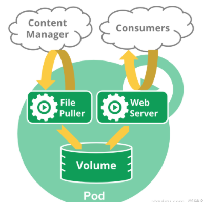

<!DOCTYPE html>


<html lang="zh-Hans">
  

    <head>
      <meta charset="utf-8" />
        
      <meta name="description" content="Technical output and problem solving record" />
      
      <meta
        name="viewport"
        content="width=device-width, initial-scale=1, maximum-scale=1"
      />
      <title>03云原生--Kubernetes核心实战 |  Tunan`s Blog</title>
  <meta name="generator" content="hexo-theme-ayer">
      
      <link rel="shortcut icon" href="/favicon.ico" />
       
<link rel="stylesheet" href="/dist/main.css">

      <link
        rel="stylesheet"
        href="https://cdn.jsdelivr.net/gh/Shen-Yu/cdn/css/remixicon.min.css"
      />
      
<link rel="stylesheet" href="/css/custom.css">
 
      <script src="https://cdn.jsdelivr.net/npm/pace-js@1.0.2/pace.min.js"></script>
       
 

      <link
        rel="stylesheet"
        href="https://cdn.jsdelivr.net/npm/@sweetalert2/theme-bulma@5.0.1/bulma.min.css"
      />
      <script src="https://cdn.jsdelivr.net/npm/sweetalert2@11.0.19/dist/sweetalert2.min.js"></script>

      <!-- mermaid -->
      
      <style>
        .swal2-styled.swal2-confirm {
          font-size: 1.6rem;
        }
      </style>
    </head>
  </html>
</html>


<body>
  <div id="app">
    
      
    <main class="content on">
      <section class="outer">
  <article
  id="post-03云原生-Kubernetes核心实战"
  class="article article-type-post"
  itemscope
  itemprop="blogPost"
  data-scroll-reveal
>
  <div class="article-inner">
    
    <header class="article-header">
       
<h1 class="article-title sea-center" style="border-left:0" itemprop="name">
  03云原生--Kubernetes核心实战
</h1>
 

      
    </header>
     
    <div class="article-meta">
      <a href="/2022/03/25/03%E4%BA%91%E5%8E%9F%E7%94%9F-Kubernetes%E6%A0%B8%E5%BF%83%E5%AE%9E%E6%88%98/" class="article-date">
  <time datetime="2022-03-25T08:15:07.000Z" itemprop="datePublished">2022-03-25</time>
</a> 
  <div class="article-category">
    <a class="article-category-link" href="/categories/%E4%BA%91%E5%8E%9F%E7%94%9F/">云原生</a>
  </div>
  
<div class="word_count">
    <span class="post-time">
        <span class="post-meta-item-icon">
            <i class="ri-quill-pen-line"></i>
            <span class="post-meta-item-text"> Word count:</span>
            <span class="post-count">2.1k</span>
        </span>
    </span>

    <span class="post-time">
        &nbsp; | &nbsp;
        <span class="post-meta-item-icon">
            <i class="ri-book-open-line"></i>
            <span class="post-meta-item-text"> Reading time≈</span>
            <span class="post-count">10 min</span>
        </span>
    </span>
</div>
 
    </div>
      
    <div class="tocbot"></div>


  
    <div class="article-entry" itemprop="articleBody">
       
  <h2 id="资源创建方式"><a href="#资源创建方式" class="headerlink" title="资源创建方式"></a>资源创建方式</h2><ul>
<li>命令行</li>
<li>YAML </li>
</ul>
<h2 id="Namespace"><a href="#Namespace" class="headerlink" title="Namespace"></a>Namespace</h2><p>名称空间用来隔离资源 <span id="more"></span></p>
<ul>
<li>命令行</li>
</ul>
<pre><code class="bash">kubectl create ns hello
kubectl delete ns hello
</code></pre>
<ul>
<li>YAML</li>
</ul>
<pre><code class="bash">apiVersion: v1
kind: Namespace
metadata:
  name: hello
</code></pre>
<h2 id="Pod"><a href="#Pod" class="headerlink" title="Pod"></a>Pod</h2><p>运行中的一组容器，Pod是kubernetes中应用的最小单位.</p>
<p></p>
<pre><code class="bash">kubectl run mynginx --image=nginx

# 查看default名称空间的Pod
kubectl get pod 
# 描述
kubectl describe pod 你自己的Pod名字
# 删除
kubectl delete pod Pod名字
# 查看Pod的运行日志
kubectl logs Pod名字

# 每个Pod - k8s都会分配一个ip
kubectl get pod -owide
# 使用Pod的ip+pod里面运行容器的端口
curl 192.168.169.136

# 集群中的任意一个机器以及任意的应用都能通过Pod分配的ip来访问这个Pod
</code></pre>
<pre><code class="bash">apiVersion: v1
kind: Pod
metadata:
  labels:
    run: mynginx
  name: mynginx
#  namespace: default
spec:
  containers:
  - image: nginx
    name: mynginx
</code></pre>
<pre><code class="bash">apiVersion: v1
kind: Pod
metadata:
  labels:
    run: myapp
  name: myapp
spec:
  containers:
  - image: nginx
    name: nginx
  - image: tomcat:8.5.68
    name: tomcat
</code></pre>
<p><strong>此时的应用还不能外部访问</strong></p>
<h2 id="Deployment"><a href="#Deployment" class="headerlink" title="Deployment"></a>Deployment</h2><p>控制Pod，使Pod拥有多副本，自愈，扩缩容等能力</p>
<pre><code class="bash"># 清除所有Pod，比较下面两个命令有何不同效果？
kubectl run mynginx --image=nginx

kubectl create deployment mytomcat --image=tomcat:8.5.68
# 自愈能力
</code></pre>
<h3 id="1、多副本"><a href="#1、多副本" class="headerlink" title="1、多副本"></a>1、多副本</h3><pre><code class="bash">kubectl create deployment my-dep --image=nginx --replicas=3
</code></pre>
<pre><code class="yaml">apiVersion: apps/v1
kind: Deployment
metadata:
  labels:
    app: my-dep
  name: my-dep
spec:
  replicas: 3
  selector:
    matchLabels:
      app: my-dep
  template:
    metadata:
      labels:
        app: my-dep
    spec:
      containers:
      - image: nginx
        name: nginx
</code></pre>
<h3 id="2、扩缩容"><a href="#2、扩缩容" class="headerlink" title="2、扩缩容"></a>2、扩缩容</h3><pre><code class="bash">kubectl scale --replicas=5 deployment/my-dep
</code></pre>
<pre><code class="bash">kubectl edit deployment my-dep

#修改 replicas
</code></pre>
<h3 id="3、自愈、故障转移"><a href="#3、自愈、故障转移" class="headerlink" title="3、自愈、故障转移"></a>3、自愈、故障转移</h3><ul>
<li>停机</li>
<li>删除Pod</li>
<li>容器崩溃</li>
</ul>
<h3 id="4、滚动更新"><a href="#4、滚动更新" class="headerlink" title="4、滚动更新"></a>4、滚动更新</h3><pre><code class="bash">kubectl set image deployment/my-dep nginx=nginx:1.16.1 --record
kubectl rollout status deployment/my-dep
</code></pre>
<pre><code class="yaml"># 修改 kubectl edit deployment/my-dep
</code></pre>
<h3 id="5、版本回退"><a href="#5、版本回退" class="headerlink" title="5、版本回退"></a>5、版本回退</h3><pre><code class="bash">#历史记录
kubectl rollout history deployment/my-dep


#查看某个历史详情
kubectl rollout history deployment/my-dep --revision=2

#回滚(回到上次)
kubectl rollout undo deployment/my-dep

#回滚(回到指定版本)
kubectl rollout undo deployment/my-dep --to-revision=2
</code></pre>
<p>更多：</p>
<p>除了Deployment，k8s还有 <code>StatefulSet</code> 、<code>DaemonSet</code> 、<code>Job</code>  等 类型资源。我们都称为 <code>工作负载</code>。</p>
<p>有状态应用使用  <code>StatefulSet</code>  部署，无状态应用使用 <code>Deployment</code> 部署</p>
<h2 id="Service"><a href="#Service" class="headerlink" title="Service"></a>Service</h2><p>将一组 <a target="_blank" rel="noopener" href="https://kubernetes.io/docs/concepts/workloads/pods/pod-overview/">Pods</a> 公开为网络服务的抽象方法。</p>
<pre><code class="bash">#暴露Deploy
kubectl expose deployment my-dep --port=8000 --target-port=80

#使用标签检索Pod
kubectl get pod -l app=my-dep
</code></pre>
<pre><code class="yaml">apiVersion: v1
kind: Service
metadata:
  labels:
    app: my-dep
  name: my-dep
spec:
  selector:
    app: my-dep
  ports:
  - port: 8000
    protocol: TCP
    targetPort: 80
</code></pre>
<h3 id="1、ClusterIP"><a href="#1、ClusterIP" class="headerlink" title="1、ClusterIP"></a>1、ClusterIP</h3><pre><code class="bash"># 等同于没有--type的
kubectl expose deployment my-dep --port=8000 --target-port=80 --type=ClusterIP
</code></pre>
<pre><code class="yaml">apiVersion: v1
kind: Service
metadata:
  labels:
    app: my-dep
  name: my-dep
spec:
  ports:
  - port: 8000
    protocol: TCP
    targetPort: 80
  selector:
    app: my-dep
  type: ClusterIP
</code></pre>
<h3 id="2、NodePort"><a href="#2、NodePort" class="headerlink" title="2、NodePort"></a>2、NodePort</h3><pre><code class="bash">kubectl expose deployment my-dep --port=8000 --target-port=80 --type=NodePort
</code></pre>
<pre><code class="yaml">apiVersion: v1
kind: Service
metadata:
  labels:
    app: my-dep
  name: my-dep
spec:
  ports:
  - port: 8000
    protocol: TCP
    targetPort: 80
  selector:
    app: my-dep
  type: NodePort
</code></pre>
<p>NodePort范围在 30000-32767 之间，阿里云安全组可以统一开放</p>
<h2 id="Ingress"><a href="#Ingress" class="headerlink" title="Ingress"></a>Ingress</h2><h3 id="1、安装"><a href="#1、安装" class="headerlink" title="1、安装"></a>1、安装</h3><pre><code class="bash">wget https://raw.githubusercontent.com/kubernetes/ingress-nginx/controller-v0.47.0/deploy/static/provider/baremetal/deploy.yaml

#修改镜像
vi deploy.yaml
#将image的值改为如下值：
registry.cn-hangzhou.aliyuncs.com/lfy_k8s_images/ingress-nginx-controller:v0.46.0

# 检查安装的结果
kubectl get pod,svc -n ingress-nginx

# 最后别忘记把svc暴露的端口要放行
</code></pre>
<h3 id="2、使用"><a href="#2、使用" class="headerlink" title="2、使用"></a>2、使用</h3><p>官网地址：<a target="_blank" rel="noopener" href="https://kubernetes.github.io/ingress-nginx/">https://kubernetes.github.io/ingress-nginx/</a></p>
<p>就是nginx做的</p>
<p><a target="_blank" rel="noopener" href="https://139.198.163.211:32401/">https://139.198.163.211:32401/</a></p>
<p><a target="_blank" rel="noopener" href="https://139.198.163.211:32401/">http://139.198.163.211:31405/</a></p>
<p>测试环境</p>
<p>应用如下yaml，准备好测试环境</p>
<pre><code class="yaml">apiVersion: apps/v1
kind: Deployment
metadata:
  name: hello-server
spec:
  replicas: 2
  selector:
    matchLabels:
      app: hello-server
  template:
    metadata:
      labels:
        app: hello-server
    spec:
      containers:
      - name: hello-server
        image: registry.cn-hangzhou.aliyuncs.com/lfy_k8s_images/hello-server
        ports:
        - containerPort: 9000
---
apiVersion: apps/v1
kind: Deployment
metadata:
  labels:
    app: nginx-demo
  name: nginx-demo
spec:
  replicas: 2
  selector:
    matchLabels:
      app: nginx-demo
  template:
    metadata:
      labels:
        app: nginx-demo
    spec:
      containers:
      - image: nginx
        name: nginx
---
apiVersion: v1
kind: Service
metadata:
  labels:
    app: nginx-demo
  name: nginx-demo
spec:
  selector:
    app: nginx-demo
  ports:
  - port: 8000
    protocol: TCP
    targetPort: 80
---
apiVersion: v1
kind: Service
metadata:
  labels:
    app: hello-server
  name: hello-server
spec:
  selector:
    app: hello-server
  ports:
  - port: 8000
    protocol: TCP
    targetPort: 9000
</code></pre>
<p>域名访问</p>
<pre><code class="yaml">apiVersion: networking.k8s.io/v1
kind: Ingress  
metadata:
  name: ingress-host-bar
spec:
  ingressClassName: nginx
  rules:
  - host: &quot;hello.atguigu.com&quot;
    http:
      paths:
      - pathType: Prefix
        path: &quot;/&quot;
        backend:
          service:
            name: hello-server
            port:
              number: 8000
  - host: &quot;demo.atguigu.com&quot;
    http:
      paths:
      - pathType: Prefix
        path: &quot;/nginx&quot;  # 把请求会转给下面的服务，下面的服务一定要能处理这个路径，不能处理就是404
        backend:
          service:
            name: nginx-demo  ## java，比如使用路径重写，去掉前缀nginx
            port:
              number: 8000
</code></pre>
<p>路径重写</p>
<pre><code class="yaml">apiVersion: networking.k8s.io/v1
kind: Ingress  
metadata:
  annotations:
    nginx.ingress.kubernetes.io/rewrite-target: /$2
  name: ingress-host-bar
spec:
  ingressClassName: nginx
  rules:
  - host: &quot;hello.atguigu.com&quot;
    http:
      paths:
      - pathType: Prefix
        path: &quot;/&quot;
        backend:
          service:
            name: hello-server
            port:
              number: 8000
  - host: &quot;demo.atguigu.com&quot;
    http:
      paths:
      - pathType: Prefix
        path: &quot;/nginx(/|$)(.*)&quot;  # 把请求会转给下面的服务，下面的服务一定要能处理这个路径，不能处理就是404
        backend:
          service:
            name: nginx-demo  ## java，比如使用路径重写，去掉前缀nginx
            port:
              number: 8000
</code></pre>
<p>流量限制</p>
<pre><code class="yaml">apiVersion: networking.k8s.io/v1
kind: Ingress
metadata:
  name: ingress-limit-rate
  annotations:
    nginx.ingress.kubernetes.io/limit-rps: &quot;1&quot;
spec:
  ingressClassName: nginx
  rules:
  - host: &quot;haha.atguigu.com&quot;
    http:
      paths:
      - pathType: Exact
        path: &quot;/&quot;
        backend:
          service:
            name: nginx-demo
            port:
              number: 8000
</code></pre>
<h2 id="存储抽象"><a href="#存储抽象" class="headerlink" title="存储抽象"></a>存储抽象</h2><h3 id="环境准备"><a href="#环境准备" class="headerlink" title="环境准备"></a>环境准备</h3><h4 id="1、所有节点"><a href="#1、所有节点" class="headerlink" title="1、所有节点"></a>1、所有节点</h4><pre><code class="bash">#所有机器安装
yum install -y nfs-utils
</code></pre>
<h4 id="2、主节点"><a href="#2、主节点" class="headerlink" title="2、主节点"></a>2、主节点</h4><pre><code class="bash">#nfs主节点
echo &quot;/nfs/data/ *(insecure,rw,sync,no_root_squash)&quot; &gt; /etc/exports

mkdir -p /nfs/data
systemctl enable rpcbind --now
systemctl enable nfs-server --now
#配置生效
exportfs -r
</code></pre>
<h4 id="3、从节点"><a href="#3、从节点" class="headerlink" title="3、从节点"></a>3、从节点</h4><pre><code class="bash">showmount -e 172.31.0.4

#执行以下命令挂载 nfs 服务器上的共享目录到本机路径 /root/nfsmount
mkdir -p /nfs/data

mount -t nfs 172.31.0.4:/nfs/data /nfs/data
# 写入一个测试文件
echo &quot;hello nfs server&quot; &gt; /nfs/data/test.txt
</code></pre>
<h4 id="4、原生方式数据挂载"><a href="#4、原生方式数据挂载" class="headerlink" title="4、原生方式数据挂载"></a>4、原生方式数据挂载</h4><pre><code class="yaml">apiVersion: apps/v1
kind: Deployment
metadata:
  labels:
    app: nginx-pv-demo
  name: nginx-pv-demo
spec:
  replicas: 2
  selector:
    matchLabels:
      app: nginx-pv-demo
  template:
    metadata:
      labels:
        app: nginx-pv-demo
    spec:
      containers:
      - image: nginx
        name: nginx
        volumeMounts:
        - name: html
          mountPath: /usr/share/nginx/html
      volumes:
        - name: html
          nfs:
            server: 172.31.0.4
            path: /nfs/data/nginx-pv
</code></pre>
<h3 id="PV-amp-PVC"><a href="#PV-amp-PVC" class="headerlink" title="PV&amp;PVC"></a>PV&amp;PVC</h3><p><em>PV：持久卷（Persistent Volume），将应用需要持久化的数据保存到指定位置</em></p>
<p><em>PVC：持久卷申明（<strong>Persistent Volume Claim</strong>），申明需要使用的持久卷规格</em></p>
<h4 id="1、创建pv池"><a href="#1、创建pv池" class="headerlink" title="1、创建pv池"></a>1、创建pv池</h4><p>静态供应</p>
<pre><code class="bash">#nfs主节点
mkdir -p /nfs/data/01
mkdir -p /nfs/data/02
mkdir -p /nfs/data/03
</code></pre>
<p>创建PV</p>
<pre><code class="bash">apiVersion: v1
kind: PersistentVolume
metadata:
  name: pv01-10m
spec:
  capacity:
    storage: 10M
  accessModes:
    - ReadWriteMany
  storageClassName: nfs
  nfs:
    path: /nfs/data/01
    server: 172.31.0.4
---
apiVersion: v1
kind: PersistentVolume
metadata:
  name: pv02-1gi
spec:
  capacity:
    storage: 1Gi
  accessModes:
    - ReadWriteMany
  storageClassName: nfs
  nfs:
    path: /nfs/data/02
    server: 172.31.0.4
---
apiVersion: v1
kind: PersistentVolume
metadata:
  name: pv03-3gi
spec:
  capacity:
    storage: 3Gi
  accessModes:
    - ReadWriteMany
  storageClassName: nfs
  nfs:
    path: /nfs/data/03
    server: 172.31.0.4
</code></pre>
<h4 id="2、PVC创建与绑定"><a href="#2、PVC创建与绑定" class="headerlink" title="2、PVC创建与绑定"></a>2、PVC创建与绑定</h4><p>创建PVC</p>
<pre><code class="yaml">kind: PersistentVolumeClaim
apiVersion: v1
metadata:
  name: nginx-pvc
spec:
  accessModes:
    - ReadWriteMany
  resources:
    requests:
      storage: 200Mi
  storageClassName: nfs
</code></pre>
<p>创建Pod绑定PVC</p>
<pre><code class="yaml">apiVersion: apps/v1
kind: Deployment
metadata:
  labels:
    app: nginx-deploy-pvc
  name: nginx-deploy-pvc
spec:
  replicas: 2
  selector:
    matchLabels:
      app: nginx-deploy-pvc
  template:
    metadata:
      labels:
        app: nginx-deploy-pvc
    spec:
      containers:
      - image: nginx
        name: nginx
        volumeMounts:
        - name: html
          mountPath: /usr/share/nginx/html
      volumes:
        - name: html
          persistentVolumeClaim:
            claimName: nginx-pvc
</code></pre>
<h3 id="ConfigMap-Redis示例"><a href="#ConfigMap-Redis示例" class="headerlink" title="ConfigMap Redis示例"></a>ConfigMap Redis示例</h3><h4 id="1、抽取应用配置，并且可以自动更新"><a href="#1、抽取应用配置，并且可以自动更新" class="headerlink" title="1、抽取应用配置，并且可以自动更新"></a>1、抽取应用配置，并且可以自动更新</h4><pre><code class="bash"># 创建配置，redis保存到k8s的etcd；
kubectl create cm redis-conf --from-file=redis.conf
</code></pre>
<pre><code class="yaml">apiVersion: v1
data:    #data是所有真正的数据，key：默认是文件名   value：配置文件的内容
  redis.conf: |
    appendonly yes
kind: ConfigMap
metadata:
  name: redis-conf
  namespace: default
</code></pre>
<h4 id="2、创建Pod"><a href="#2、创建Pod" class="headerlink" title="2、创建Pod"></a>2、创建Pod</h4><pre><code class="yaml">apiVersion: v1
kind: Pod
metadata:
  name: redis
spec:
  containers:
  - name: redis
    image: redis
    command:
      - redis-server
      - &quot;/redis-master/redis.conf&quot;  #指的是redis容器内部的位置
    ports:
    - containerPort: 6379
    volumeMounts:
    - mountPath: /data
      name: data
    - mountPath: /redis-master
      name: config
  volumes:
    - name: data
      emptyDir: &#123;&#125;
    - name: config
      configMap:
        name: redis-conf
        items:
        - key: redis.conf
          path: redis.conf
</code></pre>
<h4 id="3、检测默认配置"><a href="#3、检测默认配置" class="headerlink" title="3、检测默认配置"></a>3、检测默认配置</h4><pre><code class="bash">kubectl exec -it redis -- redis-cli

127.0.0.1:6379&gt; CONFIG GET appendonly
127.0.0.1:6379&gt; CONFIG GET requirepass
</code></pre>
<h4 id="4、修改ConfigMap"><a href="#4、修改ConfigMap" class="headerlink" title="4、修改ConfigMap"></a>4、修改ConfigMap</h4><pre><code class="yaml">apiVersion: v1
kind: ConfigMap
metadata:
  name: example-redis-config
data:
  redis-config: |
    maxmemory 2mb
    maxmemory-policy allkeys-lru 
</code></pre>
<h4 id="5、检查配置是否更新"><a href="#5、检查配置是否更新" class="headerlink" title="5、检查配置是否更新"></a>5、检查配置是否更新</h4><pre><code class="bash">kubectl exec -it redis -- redis-cli

127.0.0.1:6379&gt; CONFIG GET maxmemory
127.0.0.1:6379&gt; CONFIG GET maxmemory-policy
</code></pre>
<p>检查指定文件内容是否已经更新</p>
<p>修改了CM。Pod里面的配置文件会跟着变</p>
<p>*<strong>配置值未更改，因为需要重新启动 Pod 才能从关联的 ConfigMap 中获取更新的值。*</strong> </p>
<p>*<strong>原因：我们的Pod部署的中间件自己本身没有热更新能力*</strong></p>
<h3 id="Secret"><a href="#Secret" class="headerlink" title="Secret"></a>Secret</h3><p>Secret 对象类型用来保存敏感信息，例如密码、OAuth 令牌和 SSH 密钥。 将这些信息放在 secret 中比放在 <a target="_blank" rel="noopener" href="https://kubernetes.io/docs/concepts/workloads/pods/pod-overview/">Pod</a> 的定义或者 <a target="_blank" rel="noopener" href="https://kubernetes.io/zh/docs/reference/glossary/?all=true#term-image">容器镜像</a> 中来说更加安全和灵活</p>
<pre><code class="bash">kubectl create secret docker-registry leifengyang-docker \
--docker-username=leifengyang \
--docker-password=Lfy123456 \
--docker-email=534096094@qq.com

##命令格式
kubectl create secret docker-registry regcred \
  --docker-server=&lt;你的镜像仓库服务器&gt; \
  --docker-username=&lt;你的用户名&gt; \
  --docker-password=&lt;你的密码&gt; \
  --docker-email=&lt;你的邮箱地址&gt;
</code></pre>
<pre><code class="yaml">apiVersion: v1
kind: Pod
metadata:
  name: private-nginx
spec:
  containers:
  - name: private-nginx
    image: leifengyang/guignginx:v1.0
  imagePullSecrets:
  - name: leifengyang-docker
</code></pre>
 
      <!-- reward -->
      
    </div>
    

    <!-- copyright -->
    
    <div class="declare">
      <ul class="post-copyright">
        <li>
          <i class="ri-copyright-line"></i>
          <strong>Copyright： </strong>
          
          Copyright is owned by the author. For commercial reprints, please contact the author for authorization. For non-commercial reprints, please indicate the source.
          
        </li>
      </ul>
    </div>
    
    <footer class="article-footer">
       
<div class="share-btn">
      <span class="share-sns share-outer">
        <i class="ri-share-forward-line"></i>
        分享
      </span>
      <div class="share-wrap">
        <i class="arrow"></i>
        <div class="share-icons">
          
          <a class="weibo share-sns" href="javascript:;" data-type="weibo">
            <i class="ri-weibo-fill"></i>
          </a>
          <a class="weixin share-sns wxFab" href="javascript:;" data-type="weixin">
            <i class="ri-wechat-fill"></i>
          </a>
          <a class="qq share-sns" href="javascript:;" data-type="qq">
            <i class="ri-qq-fill"></i>
          </a>
          <a class="douban share-sns" href="javascript:;" data-type="douban">
            <i class="ri-douban-line"></i>
          </a>
          <!-- <a class="qzone share-sns" href="javascript:;" data-type="qzone">
            <i class="icon icon-qzone"></i>
          </a> -->
          
          <a class="facebook share-sns" href="javascript:;" data-type="facebook">
            <i class="ri-facebook-circle-fill"></i>
          </a>
          <a class="twitter share-sns" href="javascript:;" data-type="twitter">
            <i class="ri-twitter-fill"></i>
          </a>
          <a class="google share-sns" href="javascript:;" data-type="google">
            <i class="ri-google-fill"></i>
          </a>
        </div>
      </div>
</div>

<div class="wx-share-modal">
    <a class="modal-close" href="javascript:;"><i class="ri-close-circle-line"></i></a>
    <p>扫一扫，分享到微信</p>
    <div class="wx-qrcode">
      
    </div>
</div>

<div id="share-mask"></div>  
  <ul class="article-tag-list" itemprop="keywords"><li class="article-tag-list-item"><a class="article-tag-list-link" href="/tags/k8s/" rel="tag">k8s</a></li></ul>

    </footer>
  </div>

   
  <nav class="article-nav">
    
    
      <a href="/2022/03/24/02%E4%BA%91%E5%8E%9F%E7%94%9F-Kubernetes%E5%85%A5%E9%97%A8/" class="article-nav-link">
        <strong class="article-nav-caption">下一篇</strong>
        <div class="article-nav-title">02云原生--Kubernetes入门</div>
      </a>
    
  </nav>

   
<!-- valine评论 -->
<div id="vcomments-box">
  <div id="vcomments"></div>
</div>
<script src="//cdn1.lncld.net/static/js/3.0.4/av-min.js"></script>
<script src="https://cdn.jsdelivr.net/npm/valine@1.4.14/dist/Valine.min.js"></script>
<script>
  new Valine({
    el: "#vcomments",
    app_id: "",
    app_key: "",
    path: window.location.pathname,
    avatar: "monsterid",
    placeholder: "给我的文章加点评论吧~",
    recordIP: true,
  });
  const infoEle = document.querySelector("#vcomments .info");
  if (infoEle && infoEle.childNodes && infoEle.childNodes.length > 0) {
    infoEle.childNodes.forEach(function (item) {
      item.parentNode.removeChild(item);
    });
  }
</script>
<style>
  #vcomments-box {
    padding: 5px 30px;
  }

  @media screen and (max-width: 800px) {
    #vcomments-box {
      padding: 5px 0px;
    }
  }

  #vcomments-box #vcomments {
    background-color: #fff;
  }

  .v .vlist .vcard .vh {
    padding-right: 20px;
  }

  .v .vlist .vcard {
    padding-left: 10px;
  }
</style>

 
   
     
</article>

</section>
      <footer class="footer">
  <div class="outer">
    <ul>
      <li>
        Copyrights &copy;
        2018-2022
        <i class="ri-heart-fill heart_icon"></i> Tunan
      </li>
    </ul>
    <ul>
      <li>
        
      </li>
    </ul>
    <ul>
      <li>
        
        
        <span>
  <span><i class="ri-user-3-fill"></i>Visitors:<span id="busuanzi_value_site_uv"></span></span>
  <span class="division">|</span>
  <span><i class="ri-eye-fill"></i>Views:<span id="busuanzi_value_page_pv"></span></span>
</span>
        
      </li>
    </ul>
    <ul>
      
    </ul>
    <ul>
      
    </ul>
    <ul>
      <li>
        <!-- cnzz统计 -->
        
        <script type="text/javascript" src='https://s9.cnzz.com/z_stat.php?id=1278069914&amp;web_id=1278069914'></script>
        
      </li>
    </ul>
  </div>
</footer>    
    </main>
    <div class="float_btns">
      <div class="totop" id="totop">
  <i class="ri-arrow-up-line"></i>
</div>

<div class="todark" id="todark">
  <i class="ri-moon-line"></i>
</div>

    </div>
    <aside class="sidebar on">
      <button class="navbar-toggle"></button>
<nav class="navbar">
  
  <div class="logo">
    <a href="/"></a>
  </div>
  
  <ul class="nav nav-main">
    
    <li class="nav-item">
      <a class="nav-item-link" href="/">主页</a>
    </li>
    
    <li class="nav-item">
      <a class="nav-item-link" href="/archives">归档</a>
    </li>
    
    <li class="nav-item">
      <a class="nav-item-link" href="/categories">分类</a>
    </li>
    
    <li class="nav-item">
      <a class="nav-item-link" href="/tags">标签</a>
    </li>
    
    <li class="nav-item">
      <a class="nav-item-link" href="/tags/share">分享</a>
    </li>
    
    <li class="nav-item">
      <a class="nav-item-link" target="_blank" rel="noopener" href="https://blog.csdn.net/North_City_">CSDN</a>
    </li>
    
  </ul>
</nav>
<nav class="navbar navbar-bottom">
  <ul class="nav">
    <li class="nav-item">
      
      <a class="nav-item-link nav-item-search"  title="Search">
        <i class="ri-search-line"></i>
      </a>
      
      
      <a class="nav-item-link" target="_blank" href="/atom.xml" title="RSS Feed">
        <i class="ri-rss-line"></i>
      </a>
      
    </li>
  </ul>
</nav>
<div class="search-form-wrap">
  <div class="local-search local-search-plugin">
  <input type="search" id="local-search-input" class="local-search-input" placeholder="Search...">
  <div id="local-search-result" class="local-search-result"></div>
</div>
</div>
    </aside>
    <div id="mask"></div>

<!-- #reward -->
<div id="reward">
  <span class="close"><i class="ri-close-line"></i></span>
  <p class="reward-p"><i class="ri-cup-line"></i>请我喝杯咖啡吧~</p>
  <div class="reward-box">
    
    <div class="reward-item">
      
      <span class="reward-type">支付宝</span>
    </div>
    
    
    <div class="reward-item">
      
      <span class="reward-type">微信</span>
    </div>
    
  </div>
</div>
    
<script src="/js/jquery-3.6.0.min.js"></script>
 
<script src="/js/lazyload.min.js"></script>

<!-- Tocbot -->
 
<script src="/js/tocbot.min.js"></script>

<script>
  tocbot.init({
    tocSelector: ".tocbot",
    contentSelector: ".article-entry",
    headingSelector: "h1, h2, h3, h4, h5, h6",
    hasInnerContainers: true,
    scrollSmooth: true,
    scrollContainer: "main",
    positionFixedSelector: ".tocbot",
    positionFixedClass: "is-position-fixed",
    fixedSidebarOffset: "auto",
  });
</script>

<script src="https://cdn.jsdelivr.net/npm/jquery-modal@0.9.2/jquery.modal.min.js"></script>
<link
  rel="stylesheet"
  href="https://cdn.jsdelivr.net/npm/jquery-modal@0.9.2/jquery.modal.min.css"
/>
<script src="https://cdn.jsdelivr.net/npm/justifiedGallery@3.7.0/dist/js/jquery.justifiedGallery.min.js"></script>

<script src="/dist/main.js"></script>

<!-- ImageViewer -->
 <!-- Root element of PhotoSwipe. Must have class pswp. -->
<div class="pswp" tabindex="-1" role="dialog" aria-hidden="true">

    <!-- Background of PhotoSwipe. 
         It's a separate element as animating opacity is faster than rgba(). -->
    <div class="pswp__bg"></div>

    <!-- Slides wrapper with overflow:hidden. -->
    <div class="pswp__scroll-wrap">

        <!-- Container that holds slides. 
            PhotoSwipe keeps only 3 of them in the DOM to save memory.
            Don't modify these 3 pswp__item elements, data is added later on. -->
        <div class="pswp__container">
            <div class="pswp__item"></div>
            <div class="pswp__item"></div>
            <div class="pswp__item"></div>
        </div>

        <!-- Default (PhotoSwipeUI_Default) interface on top of sliding area. Can be changed. -->
        <div class="pswp__ui pswp__ui--hidden">

            <div class="pswp__top-bar">

                <!--  Controls are self-explanatory. Order can be changed. -->

                <div class="pswp__counter"></div>

                <button class="pswp__button pswp__button--close" title="Close (Esc)"></button>

                <button class="pswp__button pswp__button--share" style="display:none" title="Share"></button>

                <button class="pswp__button pswp__button--fs" title="Toggle fullscreen"></button>

                <button class="pswp__button pswp__button--zoom" title="Zoom in/out"></button>

                <!-- Preloader demo http://codepen.io/dimsemenov/pen/yyBWoR -->
                <!-- element will get class pswp__preloader--active when preloader is running -->
                <div class="pswp__preloader">
                    <div class="pswp__preloader__icn">
                        <div class="pswp__preloader__cut">
                            <div class="pswp__preloader__donut"></div>
                        </div>
                    </div>
                </div>
            </div>

            <div class="pswp__share-modal pswp__share-modal--hidden pswp__single-tap">
                <div class="pswp__share-tooltip"></div>
            </div>

            <button class="pswp__button pswp__button--arrow--left" title="Previous (arrow left)">
            </button>

            <button class="pswp__button pswp__button--arrow--right" title="Next (arrow right)">
            </button>

            <div class="pswp__caption">
                <div class="pswp__caption__center"></div>
            </div>

        </div>

    </div>

</div>

<link rel="stylesheet" href="https://cdn.jsdelivr.net/npm/photoswipe@4.1.3/dist/photoswipe.min.css">
<link rel="stylesheet" href="https://cdn.jsdelivr.net/npm/photoswipe@4.1.3/dist/default-skin/default-skin.min.css">
<script src="https://cdn.jsdelivr.net/npm/photoswipe@4.1.3/dist/photoswipe.min.js"></script>
<script src="https://cdn.jsdelivr.net/npm/photoswipe@4.1.3/dist/photoswipe-ui-default.min.js"></script>

<script>
    function viewer_init() {
        let pswpElement = document.querySelectorAll('.pswp')[0];
        let $imgArr = document.querySelectorAll(('.article-entry img:not(.reward-img)'))

        $imgArr.forEach(($em, i) => {
            $em.onclick = () => {
                // slider展开状态
                // todo: 这样不好，后面改成状态
                if (document.querySelector('.left-col.show')) return
                let items = []
                $imgArr.forEach(($em2, i2) => {
                    let img = $em2.getAttribute('data-idx', i2)
                    let src = $em2.getAttribute('data-target') || $em2.getAttribute('src')
                    let title = $em2.getAttribute('alt')
                    // 获得原图尺寸
                    const image = new Image()
                    image.src = src
                    items.push({
                        src: src,
                        w: image.width || $em2.width,
                        h: image.height || $em2.height,
                        title: title
                    })
                })
                var gallery = new PhotoSwipe(pswpElement, PhotoSwipeUI_Default, items, {
                    index: parseInt(i)
                });
                gallery.init()
            }
        })
    }
    viewer_init()
</script> 
<!-- MathJax -->

<!-- Katex -->

<!-- busuanzi  -->
 
<script src="/js/busuanzi-2.3.pure.min.js"></script>
 
<!-- ClickLove -->

<!-- ClickBoom1 -->

<!-- ClickBoom2 -->

<!-- CodeCopy -->
 
<link rel="stylesheet" href="/css/clipboard.css">
 <script src="https://cdn.jsdelivr.net/npm/clipboard@2/dist/clipboard.min.js"></script>
<script>
  function wait(callback, seconds) {
    var timelag = null;
    timelag = window.setTimeout(callback, seconds);
  }
  !function (e, t, a) {
    var initCopyCode = function(){
      var copyHtml = '';
      copyHtml += '<button class="btn-copy" data-clipboard-snippet="">';
      copyHtml += '<i class="ri-file-copy-2-line"></i><span>COPY</span>';
      copyHtml += '</button>';
      $(".highlight .code pre").before(copyHtml);
      $(".article pre code").before(copyHtml);
      var clipboard = new ClipboardJS('.btn-copy', {
        target: function(trigger) {
          return trigger.nextElementSibling;
        }
      });
      clipboard.on('success', function(e) {
        let $btn = $(e.trigger);
        $btn.addClass('copied');
        let $icon = $($btn.find('i'));
        $icon.removeClass('ri-file-copy-2-line');
        $icon.addClass('ri-checkbox-circle-line');
        let $span = $($btn.find('span'));
        $span[0].innerText = 'COPIED';
        
        wait(function () { // 等待两秒钟后恢复
          $icon.removeClass('ri-checkbox-circle-line');
          $icon.addClass('ri-file-copy-2-line');
          $span[0].innerText = 'COPY';
        }, 2000);
      });
      clipboard.on('error', function(e) {
        e.clearSelection();
        let $btn = $(e.trigger);
        $btn.addClass('copy-failed');
        let $icon = $($btn.find('i'));
        $icon.removeClass('ri-file-copy-2-line');
        $icon.addClass('ri-time-line');
        let $span = $($btn.find('span'));
        $span[0].innerText = 'COPY FAILED';
        
        wait(function () { // 等待两秒钟后恢复
          $icon.removeClass('ri-time-line');
          $icon.addClass('ri-file-copy-2-line');
          $span[0].innerText = 'COPY';
        }, 2000);
      });
    }
    initCopyCode();
  }(window, document);
</script>
 
<!-- CanvasBackground -->

<script>
  if (window.mermaid) {
    mermaid.initialize({ theme: "forest" });
  }
</script>


    
    

  </div>
</body>

</html>